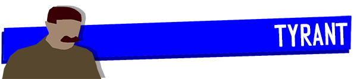

Your lives depend on one man's paranoia: the Tyrant. Assume the role of a tyrannical dictator and find out who among the other players is sabotaging the interests of the Committee. In this social deduction game you will test your investigative and deception skills. Will you be clever enough to save yourself before the Tyrant's paranoia reaches its peak? You will have proved your loyalty (or not) if your name does not appear among the victims of the Purges.
